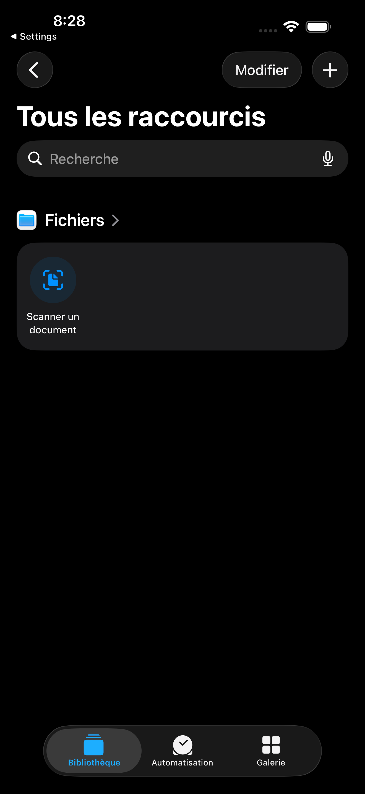
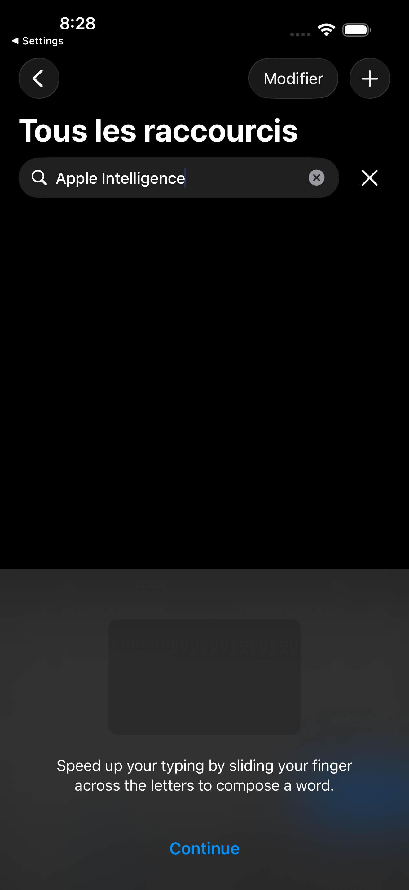
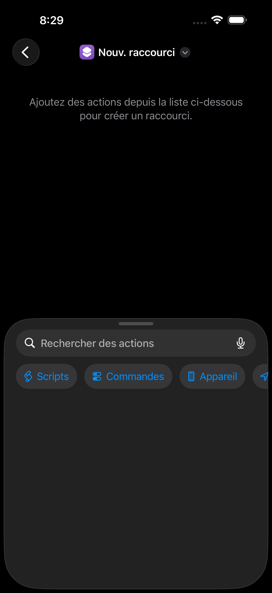
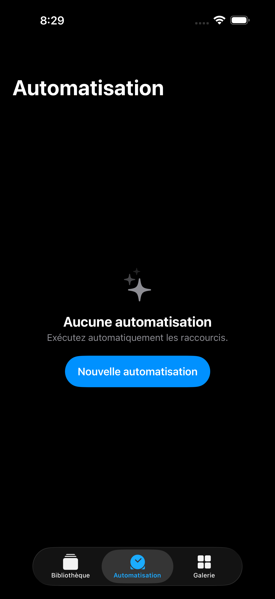
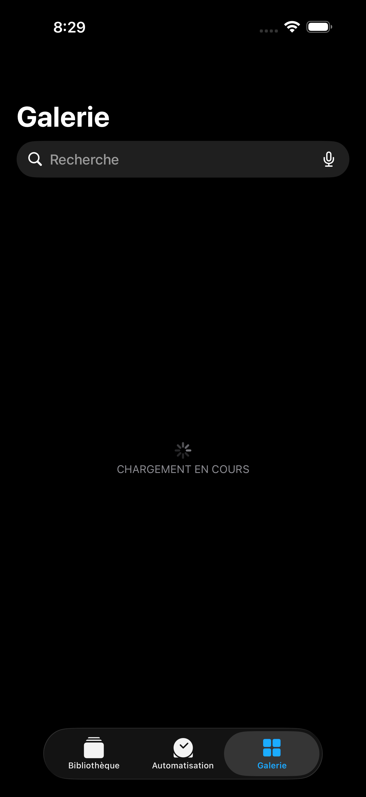
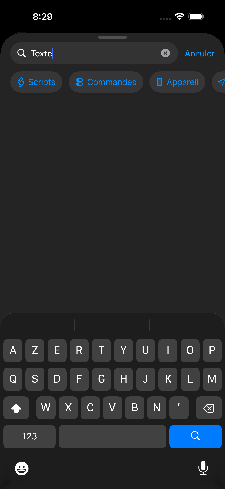
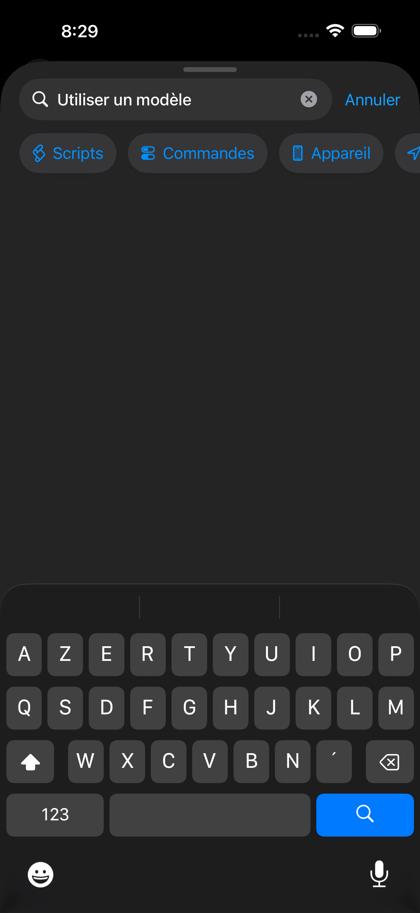
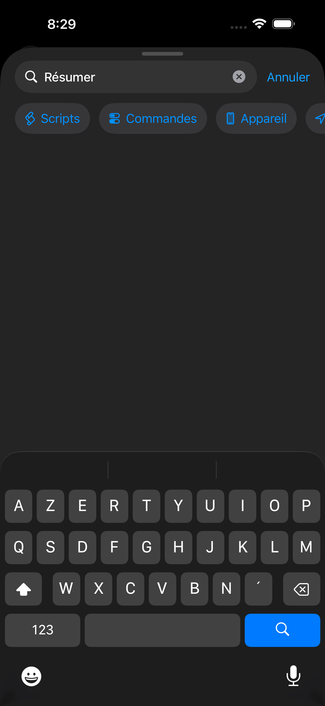

sc-01-library
sc-02-search-intelligence
sc-03-editorsc-04-editor-lower sc-05-automation-lower
sc-05-automation-lower
sc-05-automationsc-06-gallery-lower
sc-06-gallery
sc-search-0-text
sc-search-1-model
sc-search-2-summarysc-search-3-intelligencesc-search-4-wifi